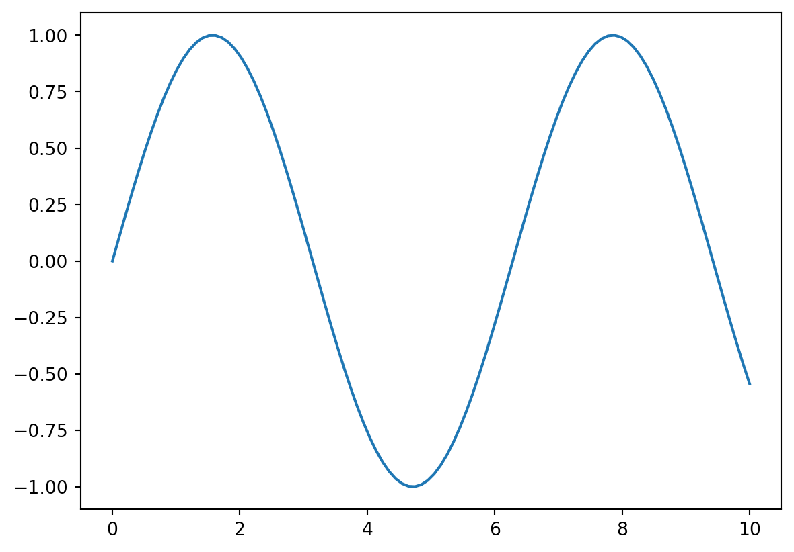
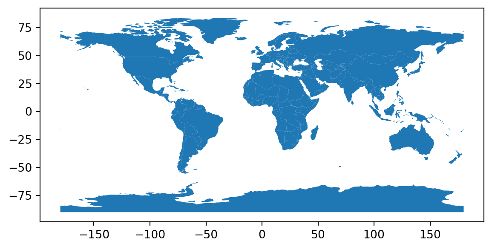
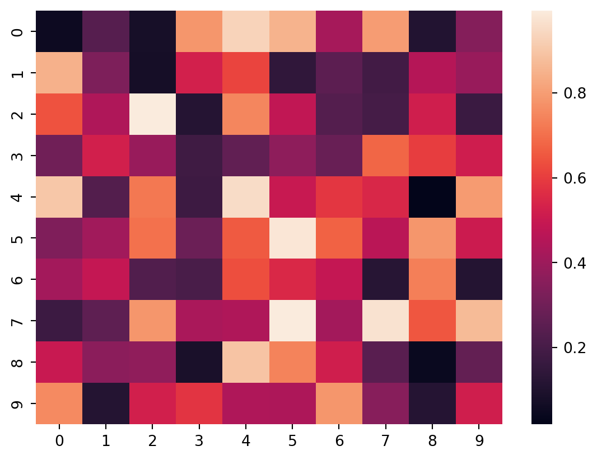

Descubre cómo visualizar y actualizar datos en tiempo real para tomar decisiones más informadas y ágiles
Python
Mantente al día con la velocidad del cambio. Aprende a visualizar y analizar datos en tiempo real para tomar decisiones más inteligentes y estratégicas.
Introducción a la visualización de datos en tiempo real
La visualización de datos en tiempo real se refiere a la representación gráfica de datos que se actualizan constantemente y en tiempo real. Es una técnica poderosa que permite analizar y comprender la información en tiempo real, lo que resulta fundamental en entornos donde la velocidad del cambio es crítica.
Imagina tener acceso a datos en tiempo real de una red de sensores, un sistema de monitoreo o incluso redes sociales. La capacidad de visualizar y comprender rápidamente estos datos te brinda una ventaja competitiva al tomar decisiones más informadas y ágiles.
Qué es la visualización de datos en tiempo real y por qué es importante
La visualización de datos en tiempo real implica mostrar información actualizada a medida que los datos se generan o se modifican. A diferencia de la visualización estática, donde los datos son estáticos y no cambian, la visualización de datos en tiempo real te permite seguir el ritmo de los eventos en tiempo real.
Esta técnica es especialmente útil en situaciones donde la toma de decisiones rápidas es fundamental. Por ejemplo, en el ámbito financiero, la visualización de datos en tiempo real permite monitorear los cambios en los precios de las acciones o en los indicadores económicos al instante, lo que facilita la identificación de oportunidades o riesgos.
En resumen, la visualización de datos en tiempo real te ayuda a estar al tanto de la velocidad del cambio, tomar decisiones más inteligentes y estratégicas, y adaptarte rápidamente a las condiciones cambiantes del entorno.
Casos de uso de la visualización de datos en tiempo real
La visualización de datos en tiempo real encuentra aplicaciones en diversos campos. Algunos casos de uso comunes incluyen:
Monitoreo de sistemas y redes: permite visualizar el rendimiento, la disponibilidad y los eventos en tiempo real de sistemas informáticos, redes de comunicación y otros sistemas complejos.
Análisis de datos financieros: proporciona una visión en tiempo real de los cambios en los precios de acciones, divisas, materias primas y otros activos financieros.
Seguimiento de redes sociales: permite visualizar y analizar en tiempo real los datos generados en las redes sociales, como menciones de marca, tendencias y sentimiento del público.
Monitoreo de sensores y dispositivos IoT: facilita la visualización de datos generados por sensores en tiempo real, como temperatura, humedad, presión, etc.
Estos son solo algunos ejemplos, pero la visualización de datos en tiempo real es una técnica versátil que se puede aplicar en una amplia gama de escenarios para mejorar la comprensión y la toma de decisiones.
Introducción a las bibliotecas y herramientas utilizadas en la visualización de datos en tiempo real
En la visualización de datos en tiempo real, existen varias bibliotecas y herramientas populares que facilitan la creación de gráficos y visualizaciones interactivas. Algunas de las principales bibliotecas utilizadas en Python son:
Matplotlib: una biblioteca ampliamente utilizada que ofrece una gran flexibilidad para crear visualizaciones estáticas y animadas.
Plotly: una biblioteca de visualización interactiva que permite crear gráficos interactivos y actualizables en tiempo real.
Bokeh: otra biblioteca de visualización interactiva que se enfoca en la creación de visualizaciones interactivas basadas en la web.
Estas bibliotecas proporcionan una amplia gama de opciones para crear gráficos en tiempo real, desde gráficos de líneas y gráficos de barras hasta mapas de calor y gráficos de dispersión interactivos.
Gráficos en streaming
Los gráficos en streaming son una forma efectiva de visualizar datos que se actualizan constantemente en tiempo real. Te permiten observar la evolución de los datos a medida que se generan o se modifican, lo que resulta especialmente útil cuando necesitas monitorear tendencias o cambios en tiempo real.
Cómo visualizar datos que se actualizan constantemente en tiempo real
La visualización de datos en tiempo real requiere una estrategia para capturar y procesar los datos en tiempo real, así como una forma de representarlos gráficamente. Para visualizar datos que se actualizan constantemente, puedes seguir estos pasos:
Obtener los datos: primero, debes establecer una fuente de datos en tiempo real, como un flujo de datos de sensores, una API de terceros o una base de datos en continuo crecimiento. Es importante contar con un mecanismo para recibir los datos a medida que se generan o se actualizan.
Procesar los datos: una vez que recibes los datos, es necesario procesarlos y estructurarlos adecuadamente para su visualización. Esto puede implicar filtrar, transformar o agregar los datos según tus necesidades.
Actualizar la visualización: una vez que tienes los datos preparados, debes actualizar la visualización en tiempo real. Esto implica refrescar el gráfico con los nuevos datos a medida que llegan. Dependiendo de la biblioteca que estés utilizando, puede haber métodos específicos para actualizar los gráficos en streaming.
Utilización de bibliotecas como Matplotlib, Plotly y Bokeh para crear gráficos en streaming
Las bibliotecas de visualización como Matplotlib, Plotly y Bokeh ofrecen herramientas y funcionalidades para crear gráficos en streaming en Python. Estas bibliotecas te permiten representar los datos en tiempo real de forma interactiva y dinámica.
Matplotlib: Matplotlib proporciona funcionalidades para crear gráficos en streaming mediante el uso de la función FuncAnimation. Puedes actualizar los datos del gráfico en tiempo real a través de un bucle y llamar a la función FuncAnimation para refrescar la visualización.
Plotly: Plotly es una biblioteca que se destaca en la creación de gráficos interactivos en tiempo real. Puedes utilizar la función update_traces para actualizar los datos en un gráfico existente. También ofrece la posibilidad de crear visualizaciones en streaming utilizando la función stream.
Bokeh: Bokeh permite crear gráficos interactivos en streaming mediante su modelo de actualización de datos. Puedes utilizar la función ColumnDataSource para almacenar los datos y actualizarlos en tiempo real. Luego, puedes enlazar los datos actualizados al gráfico y visualizarlos en streaming.
Uso de bibliotecas para datos en continuo
Una de las bibliotecas más utilizadas para visualización en tiempo real es Matplotlib. Aunque Matplotlib es conocida principalmente por crear gráficos estáticos, también podemos aprovechar sus capacidades para visualizar datos en tiempo real. Podemos utilizar la función plt.plot() en un bucle mientras los datos se actualizan continuamente para lograr la visualización en tiempo real.
import seaborn as snsimport geopandas as gpdfrom bokeh.models import ColumnDataSourcefrom bokeh.plotting import figure, curdocimport matplotlib.pyplot as pltimport numpy as np# Configuración inicialfig, ax = plt.subplots()x = np.linspace(0, 10, 100)y = np.sin(x)# Actualización en tiempo realfor i inrange(100): y = np.sin(x + i *0.1) ax.clear() ax.plot(x, y) plt.pause(0.1)plt.show()
En el código anterior, utilizamos Matplotlib para crear un gráfico de línea en tiempo real. En cada iteración del bucle, actualizamos los datos y redibujamos el gráfico utilizando ax.clear() para eliminar el contenido anterior y ax.plot() para trazar los nuevos datos. Luego, utilizamos plt.pause() para pausar brevemente la ejecución y permitir la actualización visual.
Otra biblioteca popular para visualización en tiempo real es Bokeh. Bokeh nos permite crear gráficos interactivos y actualizables en un navegador web. Con su funcionalidad de streaming de datos, podemos conectar nuestros datos en continuo y observar cómo evolucionan en tiempo real.
# Configuración inicialp = figure()x = np.linspace(0, 10, 100)y = np.sin(x)# Actualización en tiempo realsource = ColumnDataSource(data=dict(x=x, y=y))p.line(x='x', y='y', source=source)def update(): new_y = np.sin(x + curdoc().count *0.1) source.data =dict(x=x, y=new_y) curdoc().count +=1curdoc().count =0curdoc().add_periodic_callback(update, 100)curdoc().title ="Visualización en tiempo real"curdoc().add_root(p)
En este ejemplo de Bokeh, utilizamos la función figure() para crear un nuevo gráfico y p.line() para trazar la línea inicial. Luego, definimos una función update() que actualiza los datos y los asigna a la fuente de datos ColumnDataSource. Utilizamos curdoc().add_periodic_callback() para llamar a la función update() periódicamente y actualizar los datos en tiempo real.
Ejemplos prácticos de gráficos de líneas y gráficos de barras en streaming
Veamos algunos ejemplos prácticos de cómo crear gráficos de líneas y gráficos de barras en streaming utilizando las bibliotecas mencionadas:
Gráfico de líneas en streaming con Matplotlib
import matplotlib.pyplot as pltimport numpy as npfrom matplotlib.animation import FuncAnimation# Crear una figura y un ejefig, ax = plt.subplots()# Inicializar los datosx = np.linspace(0, 10, 100)y = np.sin(x)# Crear la línea inicialline, = ax.plot(x, y)# Función de actualización en tiempo realdef update(i):# Generar nuevos datos y_new = np.sin(x + i/10)# Actualizar los datos de la línea line.set_ydata(y_new)# Ajustar el rango de los ejes si es necesario ax.relim() ax.autoscale_view()# Devolver la línea actualizadareturn line,# Crear la animación en tiempo realani = FuncAnimation(fig, update, frames=100, interval=200)# Mostrar el gráfico en streamingplt.show()
En Matplotlib, podemos lograr la actualización de gráficos en tiempo real utilizando la función plt.pause() dentro de un bucle. Veamos un ejemplo:
# Configuración inicialfig, ax = plt.subplots()x = np.linspace(0, 10, 100)y = np.sin(x)# Actualización en tiempo realfor i inrange(100): y = np.sin(x + i *0.1) ax.clear() ax.plot(x, y) plt.pause(0.1)plt.show()

En este ejemplo, creamos un gráfico de línea que se actualiza en tiempo real. En cada iteración del bucle, generamos nuevos datos y los trazamos utilizando ax.plot(). Utilizamos ax.clear() para eliminar el contenido anterior y plt.pause() para pausar brevemente la ejecución y permitir la actualización visual.
Gráfico de barras en streaming con Plotly
import plotly.graph_objects as goimport numpy as np# Crear los datos inicialesx = np.arange(10)y = np.random.rand(10)# Crear la figura y las barras inicialesfig = go.Figure(data=[go.Bar(x=x, y=y)])# Actualizar las barras en tiempo realdef update():whileTrue:# Generar nuevos datos y_new = np.random.rand(10)# Actualizar las barras fig.data[0].y = y_new# Actualizar el layout si es necesario fig.update_layout(autosize=False, width=500, height=400)# Renderizar el gráfico en tiempo real fig.show()# Iniciar la actualización en tiempo realupdate()
Estos ejemplos te brindan una idea de cómo crear gráficos en streaming con Matplotlib y Plotly.
Los gráficos interactivos actualizados automáticamente son una forma poderosa de visualizar datos en tiempo real. Estos gráficos se actualizan automáticamente a medida que llegan nuevos datos, lo que te permite monitorear y analizar la evolución de los datos en tiempo real de manera interactiva.
Cómo crear gráficos que se actualicen automáticamente a medida que llegan nuevos datos
Para crear gráficos que se actualicen automáticamente a medida que llegan nuevos datos, puedes seguir estos pasos:
Establecer una fuente de datos en tiempo real: debes tener una fuente de datos en tiempo real que proporcione los nuevos datos a medida que se generan o se actualizan. Esto puede ser un flujo de datos en continuo, una API en tiempo real o una base de datos que se actualiza constantemente.
Configurar la visualización inicial: antes de que lleguen los nuevos datos, configura la visualización inicial del gráfico. Puedes establecer el tipo de gráfico, los ejes, los colores y cualquier otro elemento visual que desees mostrar.
Preparar la estructura de datos: para recibir y almacenar los nuevos datos, debes preparar una estructura adecuada. Puede ser una lista, un array o una estructura de datos más compleja dependiendo de las necesidades de tu aplicación.
Actualizar los datos y la visualización: a medida que llegan los nuevos datos, debes agregarlos a la estructura de datos existente. Luego, actualiza la visualización del gráfico con los nuevos datos. Esto puede implicar la actualización de las series de datos, la adición de nuevos puntos en un gráfico de dispersión o el ajuste de las áreas en un gráfico de áreas.
Actualizar automáticamente la visualización: para lograr que la visualización se actualice automáticamente, debes utilizar las funcionalidades de las bibliotecas de visualización adecuadas, como Plotly y Bokeh. Estas bibliotecas ofrecen métodos específicos para actualizar los gráficos en tiempo real, como update_traces en Plotly y stream en Bokeh.
Utilización de bibliotecas como Plotly y Bokeh para crear gráficos interactivos actualizados en tiempo real
Las bibliotecas Plotly y Bokeh son excelentes opciones para crear gráficos interactivos actualizados en tiempo real en Python.
Plotly: Plotly es una biblioteca de visualización que proporciona una amplia gama de tipos de gráficos interactivos y dinámicos. Ofrece funcionalidades específicas para la visualización en tiempo real, como update_traces, que te permite actualizar los datos de las trazas en un gráfico existente. También puedes utilizar la función stream para recibir datos en tiempo real y agregarlos al gráfico en streaming.
Bokeh: Bokeh es otra biblioteca de visualización que se centra en la creación de gráficos interactivos y dinámicos. Ofrece funcionalidades para la visualización en tiempo real, como ColumnDataSource, que te permite enlazar los datos actualizados al gráfico y actualizarlo automáticamente. También puedes utilizar la función stream para recibir datos en tiempo real y agregarlos al gráfico.
Ejemplos prácticos de gráficos de dispersión y gráficos de áreas actualizados en tiempo real
A continuación, te presento ejemplos prácticos de cómo crear gráficos de dispersión y gráficos de áreas actualizados en tiempo real utilizando las bibliotecas Plotly y Bokeh:
Gráfico de dispersión actualizado en tiempo real con Plotly
import plotly.graph_objects as goimport random# Crear una figura y un conjunto de datos inicialesfig = go.Figure(data=go.Scatter(x=[], y=[], mode="markers"))# Configurar el diseño del gráficofig.update_layout( title="Gráfico de dispersión en tiempo real", xaxis_title="Eje X", yaxis_title="Eje Y")# Función para actualizar el gráfico en tiempo realdef update_scatter():# Generar nuevos datos x = random.randint(0, 10) y = random.randint(0, 10)# Actualizar los datos del gráfico fig.add_trace(go.Scatter(x=[x], y=[y], mode="markers"))# Actualizar el gráfico fig.show()# Actualizar el gráfico cada segundowhileTrue: update_scatter()
Gráfico de áreas actualizado en tiempo real con Bokeh
from bokeh.plotting import figure, curdocfrom random import randintfrom bokeh.models import ColumnDataSourcefrom bokeh.layouts import column# Crear una figura y un origen de datosp = figure(title="Gráfico de áreas en tiempo real", x_axis_label="Eje X", y_axis_label="Eje Y")source = ColumnDataSource(data=dict(x=[], y=[]))# Configurar el gráfico de áreasp.patch(x="x", y="y", source=source, alpha=0.4, line_width=2)# Función para actualizar el gráfico en tiempo realdef update_area():# Generar nuevos datos x = randint(0, 10) y = randint(0, 10)# Actualizar los datos del origen de datos source.stream(dict(x=[x], y=[y]))# Configurar el documento Bokehcurdoc().add_root(column(p))# Actualizar el gráfico cada segundocurdoc().add_periodic_callback(update_area, 1000)
En Bokeh, podemos utilizar la función ColumnDataSource y el método stream() para lograr la actualización en tiempo real. Veamos un ejemplo:
# Configuración inicialp = figure()x = np.linspace(0, 10, 100)y = np.sin(x)# Actualización en tiempo realsource = ColumnDataSource(data=dict(x=x, y=y))p.line(x='x', y='y', source=source)def update(): new_y = np.sin(x + curdoc().count *0.1) source.stream(dict(x=x, y=new_y), rollover=100)curdoc().count =0curdoc().add_periodic_callback(update, 100)curdoc().title ="Actualización en tiempo real"curdoc().add_root(p)
En este ejemplo de Bokeh, utilizamos la función ColumnDataSource para almacenar nuestros datos y el método stream() para actualizarlos en tiempo real. La función update() genera nuevos datos y los agrega a la fuente de datos utilizando source.stream(). Utilizamos curdoc().add_periodic_callback() para llamar a la función update() periódicamente y actualizar los datos en tiempo real.
Visualización de datos en tiempo real en aplicaciones web
La visualización de datos en tiempo real también se puede integrar en aplicaciones web, lo que permite mostrar gráficos actualizados automáticamente y en tiempo real directamente en un navegador web. Esto brinda una experiencia interactiva a los usuarios y les permite obtener información en tiempo real de manera conveniente.
Integración de gráficos en tiempo real en aplicaciones web utilizando bibliotecas como Flask y Dash
Existen varias bibliotecas de Python que facilitan la integración de gráficos en tiempo real en aplicaciones web. Algunas de las bibliotecas más populares son Flask y Dash.
Flask: Flask es un framework web ligero y flexible que permite construir aplicaciones web de manera sencilla. Puedes utilizar Flask para crear un servidor web y enviar los datos actualizados desde el servidor al navegador. Con la ayuda de bibliotecas de visualización como Plotly o Bokeh, puedes generar gráficos en tiempo real y enviarlos al navegador para su visualización.
Dash: Dash es un framework de Python diseñado específicamente para la construcción de aplicaciones web interactivas. Dash combina la facilidad de uso de Flask con las capacidades de visualización de Plotly. Puedes utilizar Dash para crear una aplicación web en la que los gráficos se actualicen automáticamente a medida que llegan nuevos datos.
Ejemplos prácticos de visualización de datos en tiempo real en aplicaciones web interactivas
A continuación, te presento un ejemplo práctico utilizando Dash para crear una aplicación web interactiva con gráficos en tiempo real:
import dashimport dash_core_components as dccimport dash_html_components as htmlfrom dash.dependencies import Input, Outputimport plotly.graph_objs as goimport randomimport time# Crear la aplicación Dashapp = dash.Dash(__name__)# Definir el diseño de la aplicaciónapp.layout = html.Div([ html.H1("Visualización de datos en tiempo real"), dcc.Graph(id="real-time-graph"), dcc.Interval(id="interval-component", interval=1000, n_intervals=0)])# Callback para actualizar el gráfico en tiempo real@app.callback(Output("real-time-graph", "figure"), [Input("interval-component", "n_intervals")])def update_real_time_graph(n):# Generar nuevos datos x =list(range(10)) y = [random.randint(0, 100) for _ inrange(10)]# Crear la figura del gráfico figure = go.Figure(data=[go.Scatter(x=x, y=y, mode="lines")])# Configurar el diseño del gráfico figure.update_layout( title="Gráfico en tiempo real", xaxis_title="Tiempo", yaxis_title="Valor" )# Retornar la figura del gráficoreturn figure# Ejecutar la aplicaciónif__name__=="__main__": app.run_server(debug=True)
En este ejemplo, se utiliza Dash para crear una aplicación web con un gráfico en tiempo real. El gráfico se actualiza automáticamente cada segundo con nuevos datos generados aleatoriamente. Puedes personalizar este ejemplo para adaptarlo a tus propios datos y necesidades.
Visualización de datos geoespaciales
Utilización de datos geoespaciales
La visualización de datos geoespaciales nos permite representar información en relación con su ubicación geográfica. Esto resulta especialmente útil cuando queremos explorar patrones, tendencias y relaciones en datos que tienen una dimensión espacial.
Para utilizar datos geoespaciales en nuestras visualizaciones, necesitamos fuentes de datos que contengan información geográfica, como coordenadas de latitud y longitud, códigos postales o nombres de ciudades. Estos datos pueden provenir de diversas fuentes, como bases de datos especializadas, servicios de mapas en línea o conjuntos de datos abiertos.
Una de las bibliotecas más populares para trabajar con datos geoespaciales en Python es GeoPandas. GeoPandas es una extensión de la biblioteca Pandas que agrega capacidades espaciales, lo que nos permite manipular y visualizar datos geoespaciales de manera sencilla.
Veamos un ejemplo básico de cómo utilizar GeoPandas para visualizar datos geoespaciales en un mapa:
# pip install geopandas# Cargar datos geoespacialesworld = gpd.read_file(gpd.datasets.get_path('naturalearth_lowres'))# Visualizar mapaworld.plot()# Mostrar el mapaplt.show()

En este ejemplo, cargamos un conjunto de datos geoespaciales que contiene información sobre los países del mundo. Utilizamos el método plot() para visualizar los datos en un mapa. Luego, utilizamos plt.show() para mostrar el mapa en una ventana emergente.
Además de GeoPandas, existen otras bibliotecas como Folium y Plotly que también nos permiten crear visualizaciones interactivas de datos geoespaciales. Estas bibliotecas nos brindan opciones avanzadas para personalizar los mapas, agregar capas adicionales y explorar datos de manera interactiva.
La visualización de datos geoespaciales nos ayuda a comprender mejor la distribución geográfica de los datos y revelar patrones ocultos que podrían pasar desapercibidos en otro tipo de gráficos. Explorar y visualizar datos en un contexto geoespacial agrega un nivel adicional de información y nos permite tomar decisiones basadas en la ubicación.
Mapas de calor y mapas temáticos
Los mapas de calor y los mapas temáticos son poderosas herramientas de visualización que nos permiten representar datos geoespaciales de manera más significativa. Estos mapas nos ayudan a identificar patrones y tendencias en función de valores numéricos o categorías específicas.
Un mapa de calor utiliza colores para representar la intensidad o densidad de un fenómeno en un área geográfica. Es ideal para mostrar la concentración de datos o la variación espacial de una variable, como la temperatura, la densidad de población o el rendimiento de un producto en diferentes regiones.
Por otro lado, los mapas temáticos se utilizan para representar categorías o clases específicas en un mapa. Cada categoría se asocia con un color o un patrón único, lo que permite visualizar la distribución espacial de diferentes características o atributos, como el tipo de vegetación, la diversidad cultural o las tasas de criminalidad en diferentes áreas.
Para crear mapas de calor y mapas temáticos, podemos utilizar bibliotecas especializadas como Matplotlib, Seaborn y GeoPandas. Estas bibliotecas nos brindan una variedad de funciones y herramientas para personalizar la apariencia de nuestros mapas y resaltar la información más relevante.
Aquí tienes un ejemplo básico de cómo crear un mapa de calor utilizando Seaborn:
# pip install seaborn matplotlib# Cargar datosdata = np.random.rand(10, 10)# Crear mapa de calorsns.heatmap(data)# Mostrar el mapa de calorplt.show()

En este ejemplo, cargamos nuestros datos y utilizamos la función heatmap() de Seaborn para crear el mapa de calor. Luego, utilizamos plt.show() para mostrar el mapa en una ventana emergente.
Recuerda que la elección de colores es importante en los mapas de calor y mapas temáticos. Debes seleccionar una paleta de colores que sea perceptualmente equilibrada y que permita una fácil interpretación de los datos.
Explorar datos geoespaciales a través de mapas de calor y mapas temáticos nos brinda una visión más completa y comprensible de los patrones y relaciones espaciales. Estas visualizaciones nos ayudan a tomar decisiones más informadas y a comunicar eficazmente la información a otras personas.
Casos de estudio y ejemplos prácticos
La visualización de datos en tiempo real tiene aplicaciones en una amplia variedad de dominios y escenarios. A continuación, exploraremos algunos casos de estudio y ejemplos prácticos de cómo se puede aplicar esta técnica en diferentes áreas:
Aplicación de la visualización de datos en tiempo real en diferentes dominios
Finanzas: En el campo de las finanzas, la visualización de datos en tiempo real es fundamental para el monitoreo de los mercados, la detección de patrones y tendencias, y la toma de decisiones ágiles. Los gráficos en tiempo real permiten a los analistas y traders visualizar la evolución de los precios de las acciones, divisas y otros instrumentos financieros, así como la detección de anomalías y eventos importantes.
Monitoreo de sistemas: En entornos tecnológicos y de infraestructura, la visualización de datos en tiempo real es esencial para el monitoreo y la gestión de sistemas y redes. Los gráficos en tiempo real permiten visualizar métricas clave, como la carga del servidor, el tráfico de red, la disponibilidad de recursos y otros indicadores de rendimiento. Esto ayuda a identificar problemas, optimizar la capacidad y tomar acciones correctivas de manera rápida.
Redes sociales: Las redes sociales generan grandes cantidades de datos en tiempo real. La visualización de estos datos en tiempo real permite comprender la dinámica de la participación de los usuarios, la propagación de contenido y las tendencias emergentes. Los gráficos en tiempo real pueden mostrar la actividad de los usuarios, los comentarios, las interacciones y las menciones relacionadas con temas específicos, lo que proporciona información valiosa para campañas de marketing, análisis de sentimiento y toma de decisiones estratégicas.
Ejemplos de visualización de datos en tiempo real en escenarios reales
A continuación, presentaremos algunos ejemplos prácticos de visualización de datos en tiempo real en escenarios reales:
Monitoreo de tráfico en tiempo real: Mediante el uso de sensores y cámaras, es posible recopilar datos sobre el tráfico vehicular en tiempo real. Estos datos pueden visualizarse en mapas interactivos y gráficos en tiempo real para proporcionar información sobre el flujo de tráfico, los patrones de congestión y las rutas más eficientes.
Seguimiento de redes sociales: Las empresas pueden utilizar herramientas de visualización en tiempo real para monitorear las redes sociales y obtener información sobre la opinión de los usuarios, las tendencias emergentes y las campañas de marketing. Esto permite adaptar rápidamente las estrategias y tomar decisiones informadas basadas en los datos en tiempo real.
Monitoreo de sistemas de energía: En la industria energética, la visualización de datos en tiempo real es esencial para monitorear y gestionar los sistemas de generación y distribución de energía. Los gráficos en tiempo real pueden mostrar datos como la demanda de energía, la producción, los precios y otros factores relevantes para optimizar la eficiencia y la calidad del suministro de energía.
Consideraciones de rendimiento y escalabilidad
Cuando trabajamos con grandes volúmenes de datos en tiempo real, es importante tener en cuenta varios factores para garantizar un rendimiento óptimo y una escalabilidad adecuada en la visualización de datos. A continuación, exploraremos algunas consideraciones y estrategias clave:
Factores a tener en cuenta al trabajar con grandes volúmenes de datos en tiempo real
Velocidad de procesamiento: Los datos en tiempo real se generan y actualizan rápidamente, por lo que es fundamental contar con una infraestructura que permita procesarlos a alta velocidad. Esto implica utilizar técnicas de procesamiento paralelo, optimización de consultas y sistemas distribuidos para manejar la carga de trabajo.
Latencia: La latencia es el tiempo transcurrido entre la generación de los datos y su visualización. Para garantizar una experiencia en tiempo real, es esencial minimizar la latencia. Esto implica utilizar sistemas de transmisión de datos eficientes, minimizar las operaciones de lectura/escritura y optimizar el rendimiento de las consultas.
Escalabilidad: A medida que aumenta el volumen de datos y la cantidad de usuarios que acceden a la visualización en tiempo real, es necesario que el sistema sea escalable. Esto implica utilizar arquitecturas distribuidas, sistemas de procesamiento en paralelo y técnicas de particionamiento de datos para garantizar que el sistema pueda manejar la carga sin degradar el rendimiento.
Optimización de consultas: Para garantizar un rendimiento eficiente, es importante optimizar las consultas de datos. Esto implica utilizar índices adecuados, estructuras de datos optimizadas y técnicas de filtrado y agregación para reducir el tiempo de respuesta y minimizar el procesamiento innecesario.
Estrategias para optimizar el rendimiento y la escalabilidad de la visualización de datos en tiempo real
Caché de datos: Utilizar técnicas de caché puede mejorar significativamente el rendimiento al reducir la necesidad de acceder a la fuente de datos en cada consulta. Almacenar en caché los resultados de consultas anteriores y mantenerlos actualizados puede acelerar la generación de visualizaciones en tiempo real.
Procesamiento en tiempo real: En lugar de procesar todos los datos en tiempo real, es posible aplicar técnicas de procesamiento en tiempo real para filtrar, resumir o agregar los datos antes de visualizarlos. Esto permite reducir la carga de trabajo en el momento de la visualización y mejorar el rendimiento general del sistema.
Distribución de carga: Distribuir la carga de trabajo en varios nodos o servidores puede mejorar la escalabilidad del sistema. Esto implica utilizar técnicas de particionamiento de datos, balanceo de carga y paralelismo para distribuir eficientemente el procesamiento de datos entre diferentes recursos.
Compresión de datos: La compresión de datos puede reducir el espacio de almacenamiento y el ancho de banda necesario para transmitir los datos. Utilizar algoritmos de compresión adecuados puede mejorar la eficiencia del sistema y reducir los costos asociados con el almacenamiento y la transmisión de datos.
Conclusiones y recursos adicionales
En conclusión, la visualización de datos en tiempo real es una poderosa herramienta que nos permite tomar decisiones informadas y ágiles en entornos dinámicos. Al utilizar bibliotecas y herramientas como Matplotlib, Plotly, Bokeh, Flask y Dash, podemos crear visualizaciones interactivas y actualizadas automáticamente que nos permiten explorar y comprender los datos en tiempo real.
Algunos conceptos clave y mejores prácticas a tener en cuenta son:
Comprender el dominio y los requisitos específicos del problema antes de diseñar visualizaciones en tiempo real.
Utilizar bibliotecas adecuadas como Matplotlib, Plotly y Bokeh para crear gráficos en streaming e interactivos.
Considerar la escalabilidad y el rendimiento al trabajar con grandes volúmenes de datos en tiempo real.
Implementar estrategias de optimización como el caché de datos, el procesamiento en tiempo real y la distribución de carga.
Mantenerse actualizado con los avances en las bibliotecas y herramientas de visualización de datos en tiempo real.
Recursos adicionales para aprender más sobre la visualización de datos en tiempo real con Python:
Estos recursos proporcionan información detallada, ejemplos prácticos y tutoriales que te ayudarán a explorar y dominar la visualización de datos en tiempo real con Python.
Publicaciones Similares
Si te interesó este artículo, te recomendamos que explores otros blogs y recursos relacionados que pueden ampliar tus conocimientos. Aquí te dejo algunas sugerencias:
@online{achalma2023,
author = {Achalma, Edison},
title = {Visualización de datos en tiempo real con python},
date = {2023-07-01},
url = {https://achalmaedison.netlify.app//docs/blog/posts/2023-07-01-visualizacion-de-datos-en-tiempo-real-con-python},
langid = {es}
}
![]()